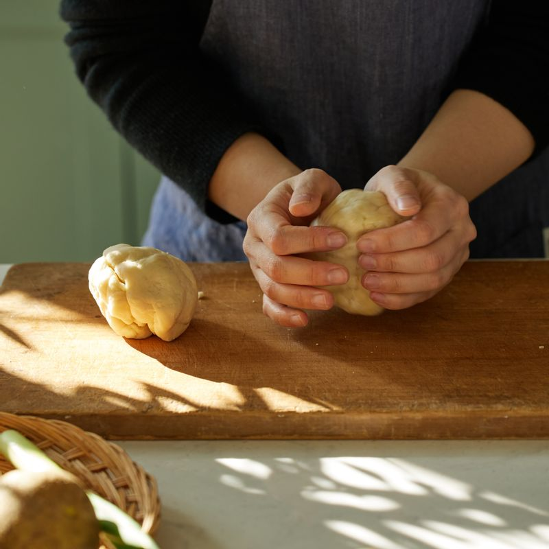
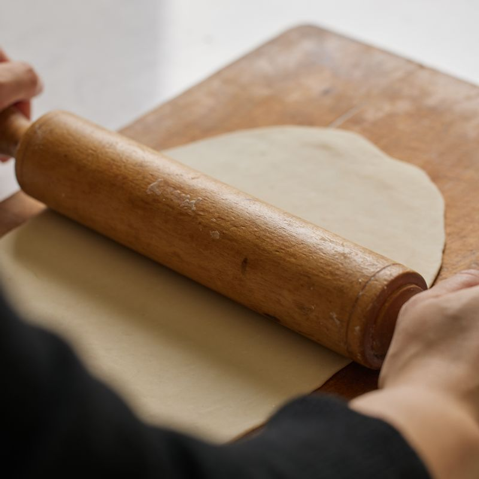
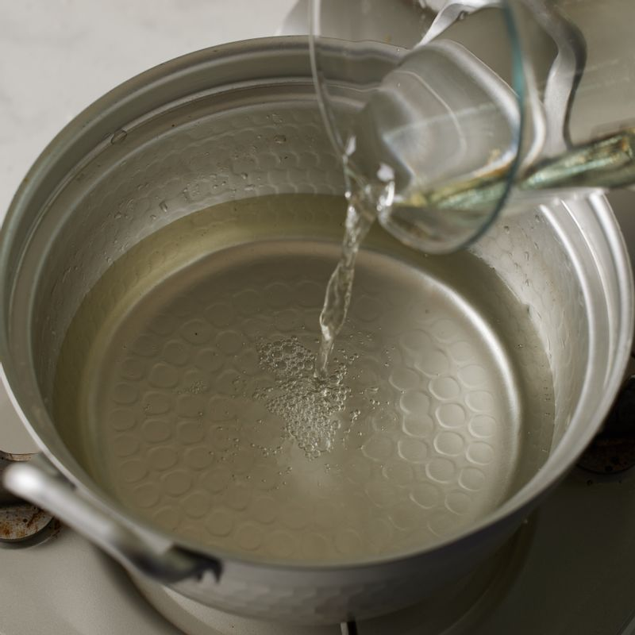
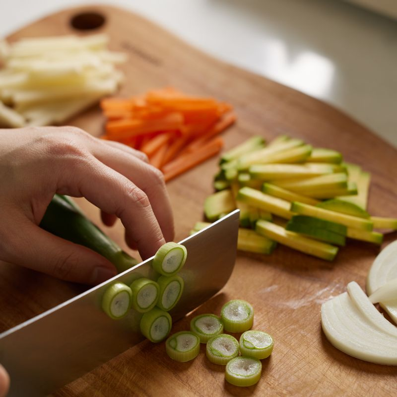
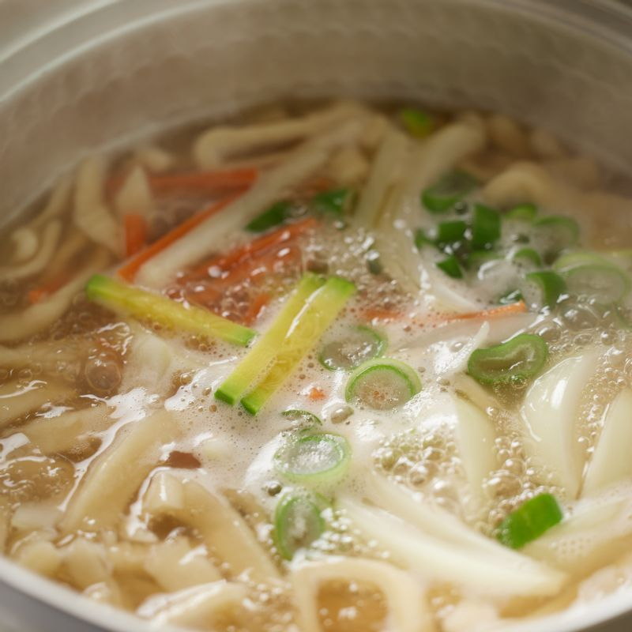

 볼에 반죽재료를 넣고 반죽 한 후 랲으로 감싸 냉장고에서 30분간 숙성시켜주세요.

도마에 덧밀가루를 약간 뿌린 후 반죽을 밀대로 밀어 얇게 펼쳐주세요.
펼친 반죽에 덧밀가루를 발라가며 3~4번 접은 후 0.5cm두께로 썰어주세요.
 따뜻한 물에 다시마를 넣고 10분 정도 불려 육수를 만들어주세요.
 애호박, 당근, 양파, 감자는 채썰고 대파는 송송 썰어 준비해주세요.

냄비에 다시마우린 물과 국물 양념을 넣고 끓이다가 칼국수 면을 넣어 5분간 끓여주세요.
썰어둔 채소를 넣고 한소끔 더 끓여 완성해주세요.
 완성된 칼국수를 그릇에 담아 맛있게 즐겨주세요.
완성된 칼국수를 그릇에 담아 맛있게 즐겨주세요.
(tip. 기호에 따라 김가루를 넣어 드셔도 좋아요)
(tip. 부족한 간은 소금으로 해주세요)